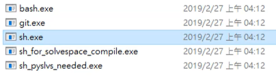

dia <<
Previous Next >> 分組網站合併
SSH新增
根據https://github.com/mdecourse/cad2019/issues/20 依序 操作
1.更改C:\Users\acer\Downloads\dartpad_based\data\portablegit\bin中的
"sh_for_solvespace.exe"檔案>"sh.exe"

2.打開可攜系統，於cmd中輸入sh以進入建立ssh key畫面
3.輸入
ssh-keygen -t rsa -b 4096 -C "使用者學號"
4.於dartpad_based\data\home\.ssh 中檢查是否有新增兩把鑰匙
5.下載putty
6.打開puttygen，匯入剛剛產生的key
7.利用"save the generated key"兩個功能生成putty key
8.利用scite，打開id_rsa.pub檔案
9.複製字串內容，接著打開github>setting>0.點選右上new ssh key
11.新增內容至stat.bat
set GIT_HOME=%Disk%:\portablegit\bin\
set GIT_SSH=%Disk%:\putty\plink.exe
將這兩條內容新增至bat檔案內
教學影片:
老師教學影片：
dia <<
Previous Next >> 分組網站合併